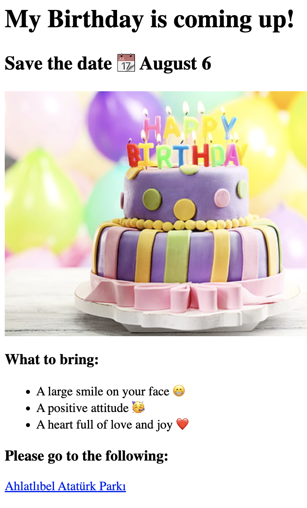

My First Ever Portfolio Project
Hello, my name is Arda Şen. I am currently a high school student in Ankara, Türkiye, aiming to become a pro developer.
Below are some very amateur projects I have curated so far. Enjoy!
Birthday Invite Project

Movie Ranking Project